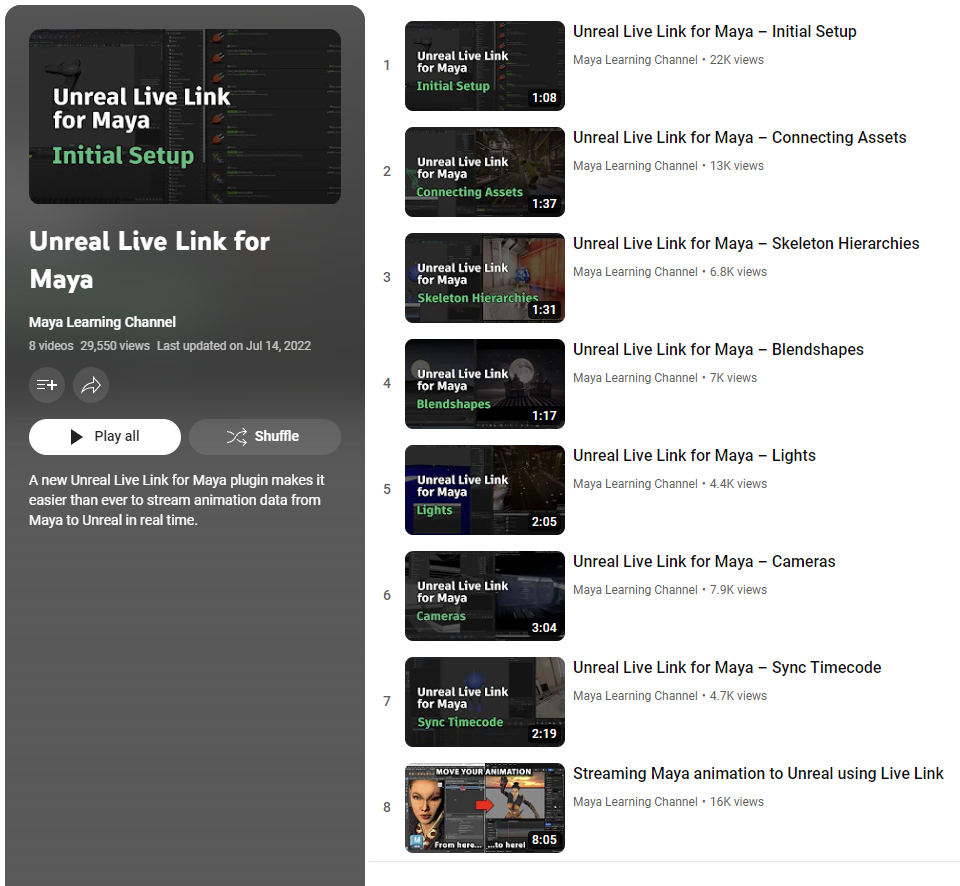

在使用 Unreal Live Link 之前，必须先在 Maya 资产（源）和 Unreal 资产（目标）之间设置链接。
在启动实时链接之前，必须先在 Maya 和 Unreal 中激活相应的插件。
要激活 Unreal Live Link 插件，请执行以下操作：
在 Maya 中，转到“窗口 > 设置/首选项 > 插件管理器”(Windows > Settings/Preferences > Plug-in Manager)。
选中 MayaUnrealLiveLinkPlugin_5_0.mll 和 MayaUnrealLiveLinkPluginUI.py 旁边的“已加载”(Loaded)列。
在 Unreal 中，转到“编辑 > 插件”(Edit > Plugins)。
在“动画”(Animation)类别中，启用“Maya 实时链接”(Maya Live Link)插件。
转到“编辑 > 编辑器首选项”(Edit > Editor Preferences)，然后执行以下操作：
在 Maya 和 Unreal 之间实时链接特定对象之前，首先需要在这两个应用程序之间设置连接：
如果 Unreal Live Link 无法正确加载，请确保已将 Unreal Engine 安装到同一台计算机上。
在 Maya 中，确保资产文件当前处于打开状态。
转到“文件 > Unreal Live Link”(File > Unreal Live Link)以打开 Unreal Live Link 窗口。该窗口显示它为“未连接”(Not Connected)，因为您尚未建立连接。
在 Unreal 中，转到“窗口 > 虚拟制作 > 实时链接”(Window > Virtual Production > Live Link)。
单击“源 > Maya 实时链接 > [您的计算机名称]”(Source > Maya Live Link > [your machine name])。在 Maya 中，Unreal Live Link 窗口显示它为“已连接”(Connected)。
现在，您可以在 Maya 和 Unreal 之间对对象数据或动画数据进行流式传输。
请访问 Maya 教学频道上的适用于 Maya 的 Unreal Live Link 播放列表，观看简短视频教程，以便开始设置。
